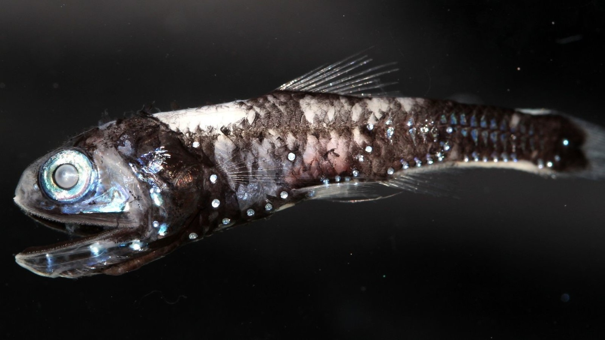
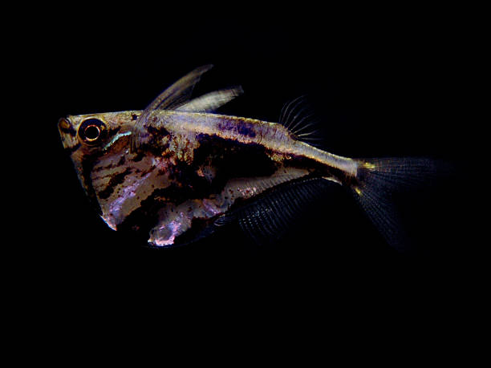
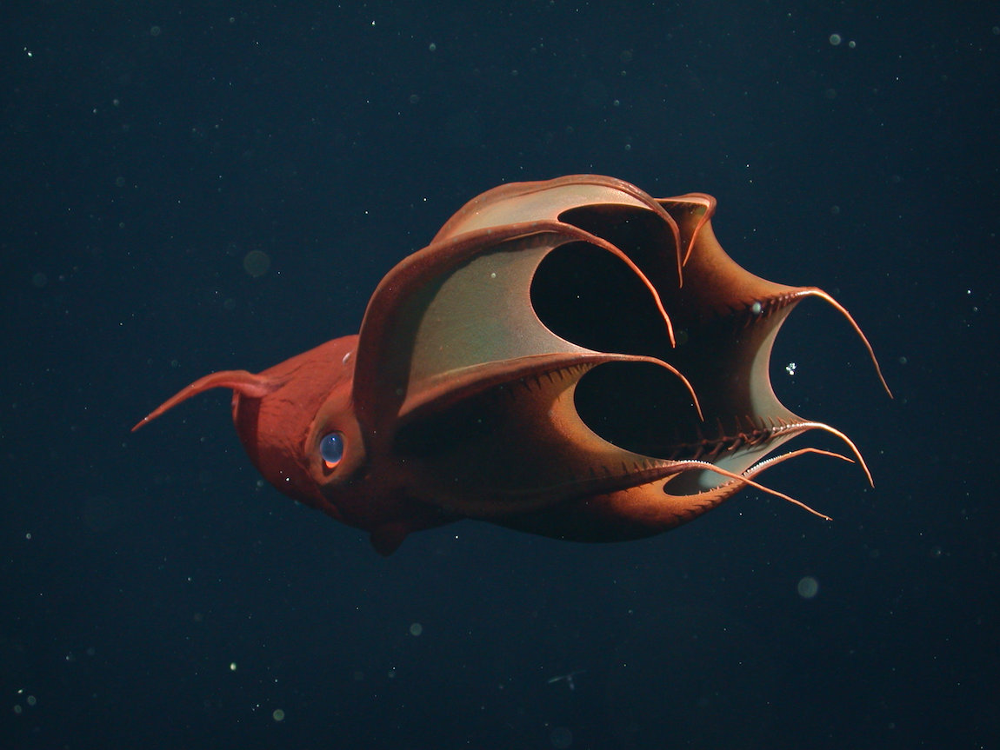
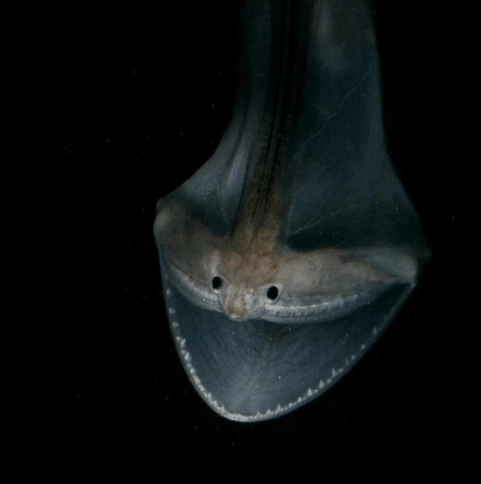
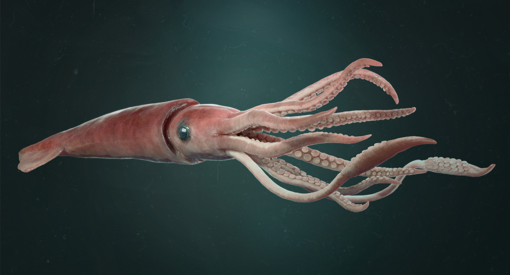
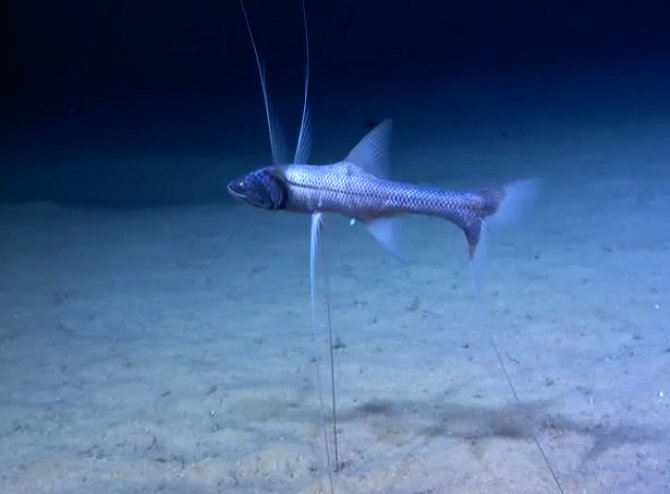
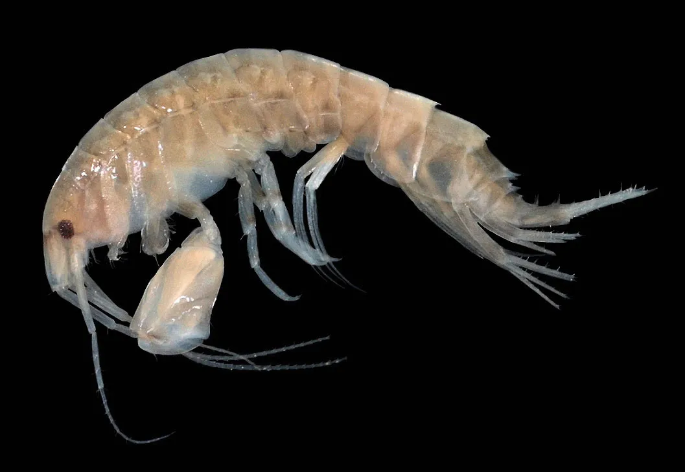
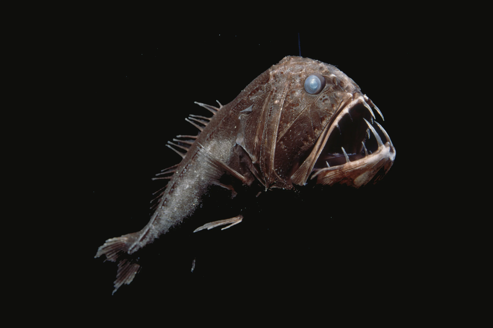

Twilight Zone



The Twilight Zone is largely unexplored, a layer of water that stretches across the globe. It lies 200 - 1,000 metres below the ocean’s surface. There are many strange and unusual creatures that have been discovered. The images above display from right to left: Lanternfish, Hatchetfish and Vampire Squid.
Midnight Zone



The Midnight Zone is a layer of the ocean extending from 1,000 - 4,000 metres below the ocean’s surface. Characterised by darkness, ice cold temperatures and immense pressure, many creatures living in this zone have adapted by having jelly-like bodies and softer bones.
The Abyss



The Abyss is a layer below the Midnight Zone spanning 3,000 to 6,000 metres below the surface. With freezing temperatures and limited food resources, many creatures here are weird and wonderful.
The Trenches



The Trenches reach depths of 6,000 to 10,000 metres, including the Mariana Trench and others in the Pacific Ocean.